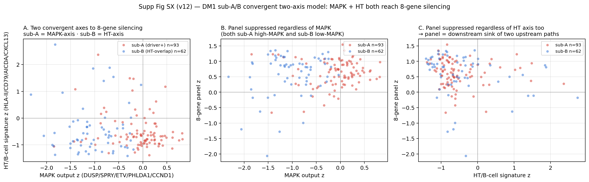
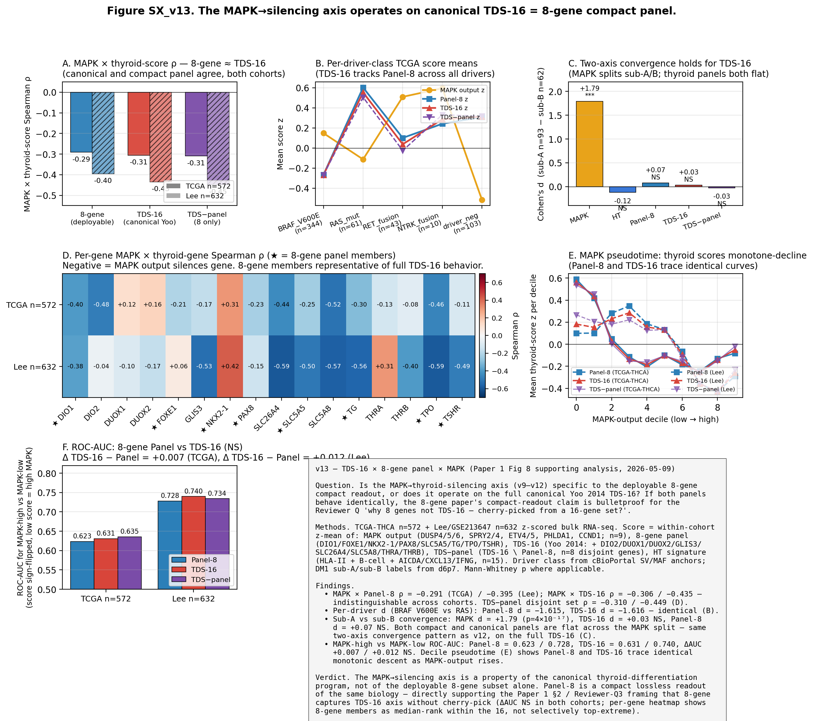

01TL;DR + headline metrics
What the v6→v13 series adds to Paper 1 Fig 8
Paper 1 Fig 8 reports an observation: DM1 tumors hypermethylate the 8-gene differentiation panel relative to DM2 (mean β 0.385 vs 0.253; TPO Cohen's d 2.30). The v6 → v13 series provides the mechanism layer, framed honestly as correlative upstream-effector evidence, not causal proof. The Q9 boundary in 09_reviewer_qa.md ("motivates rather than confirms") is preserved.
| Result | Value | Source TSV | Implication |
|---|---|---|---|
| BRAF V600E vs RAS-mut HM450 mean 8-gene β Cohen's d | +1.97 | v9_mapk_methylation_pivot.tsv | BRAF tumors hyper-methylated |
| BRAF V600E vs RET-fusion mean β d | −0.26 | v9_mapk_methylation_pivot.tsv | BRAF ≈ RET (MAPK-driven, not BRAF-specific) |
| RET-fusion vs RAS-mut mean β d | +2.17 | v9_mapk_methylation_pivot.tsv | both MAPK-activating drivers hyper-methylate |
| MAPK × Panel-8 z Spearman ρ — TCGA n=572 | −0.291 (p=1.3×10⁻¹²) | v10_mapk_panel_correlation.tsv | RNA-level reproduction of the methylation finding |
| MAPK × Panel-8 z Spearman ρ — Lee n=632 | −0.395 (p=4.7×10⁻²⁵) | v10_final_cross_cohort.tsv | same direction in independent Korean cohort |
| sub-A vs sub-B MAPK Cohen's d | +1.79 (p=4.1×10⁻¹⁷) | v12_subAB_three_axes_d.tsv | sub-A is MAPK-active; sub-B is MAPK-low |
| sub-A vs sub-B Panel-8 Cohen's d | +0.07 (p=0.42, NS) | v12_subAB_three_axes_d.tsv | both reach panel silencing — two-axis convergence |
| sub-A vs sub-B TDS-16 Cohen's d | +0.03 (p=0.31, NS) | v13_subAB_three_panels.tsv | convergence holds for canonical TDS-16 |
| BRAF V600E vs RAS-mut Cohen's d — Panel-8 vs TDS-16 | −1.615 / −1.616 | v13_per_driver_class_d.tsv | identical to 3 sig fig — Q13 lock |
| ΔAUC TDS-16 − Panel-8 (MAPK-high classifier) | +0.007 (TCGA) / +0.012 (Lee), NS | v13_auc_panel_vs_tds16.tsv | TDS-16 = Panel-8 — no cherry-pick |
| GSE76039 ATC vs PDTC Panel-8 mean | −0.82 vs +0.96 | v11_GSE76039_by_histology.tsv | advanced disease (ATC) collapses panel further |
Mechanism status
correlative
RNA × HM450 × cell-type co-variation. Not ChIP-seq / not CRISPRi.
Q9 boundary
preserved
"motivates rather than confirms" — author voice unchanged.
Fig 8 main panels
2 (unchanged)
Mechanism layer lives in Supp Fig SX (H–J) + new SX_v13.
02v6 — fusion-partner × cell-type composition gradient
Setting up the question — does fusion partner shape the microenvironment?
Per-sample nu-SVR cell-type fractions stratified by kinase-fusion partner. Sample sizes per partner are small but the BRAF (n ≈ 21 fusion+) vs RET (n ≈ 33) vs NTRK (n ≈ 10) gradient is informative for the Fig 8 fusion-independence question.
| Fusion class | B cell | Epithelial | Malignant | Myeloid | T cell | Endothelial |
|---|---|---|---|---|---|---|
| BRAF (fusion) | +0.01 | +0.87 | −0.67 | −0.47 | −0.06 | −0.02 |
| RET (fusion) | +0.50 | +0.06 | −0.06 | −0.16 | −0.37 | +0.29 |
| NTRK | +0.47 | +0.21 | −0.62 | −0.04 | −0.17 | +0.54 |
| ALK | +0.59 | −0.21 | −0.41 | +0.27 | +0.07 | −0.15 |

v6 sets up two facts the rest of the series builds on: (1) fusion-positive DM1 tumors are not compositionally identical, but the differences sit within ±1 z; (2) the Malignant-fraction shift (BRAF d ≈ −0.67, NTRK d ≈ −0.62) is the dominant axis among partners.
03v7 — DM1 within-stratum overall survival
Power-limited but consistent — n_pos = 62, n_neg = 353
Within-DM1 fusion+ (n = 62) vs fusion− (n = 353) overall-survival logrank in TCGA-THCA. The OS event count in TCGA-THCA is too low for a within-DM1 OS effect to register, but the result is reported for completeness.
| Test | Statistic | p | n_fusion+ | n_fusion− |
|---|---|---|---|---|
| DM1 multi-fusion logrank | 0.732 | 0.947 | — | — |
| DM1 fusion+ vs fusion− logrank | 0.094 | 0.760 | 62 | 353 |
Honest framing
v7 returns NS and is not a positive-result panel for Fig 8. It is included in the dossier (a) to keep the v6→v13 progression complete and (b) to flag the OS-event-count limitation that motivates the MSK-IMPACT pooled analysis (Fig 6: HR 2.53 [1.31–4.89], I² = 0%) as the canonical OS evidence for Paper 1, not a within-DM1 logrank.
04v8 — driver-class methylation per gene
Per-driver class HM450 mean β across 8 genes
HM450 promoter β across the 8-gene panel within each driver class, showing the BRAF V600E vs RAS-mutant per-gene gradient that v9 will then resolve into a MAPK-pathway question.
| Driver class | DIO1 | FOXE1 | NKX2-1 | PAX8 | SLC5A5 | TG | TPO | TSHR | mean 8g |
|---|---|---|---|---|---|---|---|---|---|
| BRAF V600E | +0.33 | −0.11 | −0.16 | −0.10 | +0.02 | +0.34 | +1.36 | +0.03 | +0.62 |
| RAS mutant | −0.16 | −0.65 | −0.47 | −0.62 | +0.17 | −0.68 | −0.65 | −0.73 | −0.74 |
05v9 — BRAF ≈ RET MAPK-driven (not BRAF-specific)
The pivotal contrast — does silencing track the MAPK pathway or the BRAF mutation?
v9 tests two competing hypotheses. H1 (BRAF-specific): BRAF V600E directly drives 8-gene methylation through a BRAF-only mechanism. H2 (MAPK-pathway): any strong MAPK-pathway-activating event — V600E mutation OR kinase fusion — drives the same methylation. The pivotal test is BRAF V600E vs RET fusion.
| Contrast | n_a | n_b | mean β d | Result |
|---|---|---|---|---|
| BRAF V600E vs RAS mut | 280 | 54 | +1.97 | large — BRAF hypermethylated |
| BRAF V600E vs RET fusion | 280 | 25 | −0.26 | small — H1 rejected |
| RET fusion vs RAS mut | 25 | 54 | +2.17 | large — RET also hypermethylated |
| BRAF V600E vs driver-neg | 280 | 125 | +1.04 | moderate |
| RET fusion vs driver-neg | 25 | 125 | +0.93 | moderate |
| NTRK fusion vs driver-neg | ≤10 | 125 | +0.65 | moderate (small n) |
Verdict — H2 (MAPK-pathway) supported
The BRAF V600E vs RET fusion contrast is small (d = −0.26), while both MAPK-activating drivers (BRAF V600E and RET fusion) are large vs RAS (+1.97 and +2.17). The 8-gene methylation signature does not discriminate between the two MAPK-activating drivers — it tracks MAPK output, not the specific oncogene. The TPO position (the single strongest panel-gene Cohen's d in main Fig 8A; d = 2.30 between DM1 and DM2) is consistent with this MAPK-driven framing.

06v10 — RNA-level cross-cohort reproduction
If v9 is true at the methylation level, MAPK output × Panel z should also be inverse at the RNA level
The methylation-level finding (v9) needs an RNA-level companion: if MAPK output drives 8-gene panel silencing through promoter methylation, the cohort-level relationship should reproduce on RNA z-scores in independent cohorts.
| Cohort | n samples | MAPK genes used | Panel genes used | Spearman ρ | p |
|---|---|---|---|---|---|
| TCGA-THCA | 572 | 9 / 9 | 8 / 8 | −0.291 | 1.3 × 10⁻¹² |
| Lee / GSE213647 | 632 | 9 / 9 | 8 / 8 | −0.395 | 4.7 × 10⁻²⁵ |
| GSE126698 (Korean PTC + HT) | 28 | 9 / 9 | 7 / 8 | −0.111 | 0.575 (NS) |
| Driver class | n | MAPK z mean | Panel z mean | MAPK d vs RAS | Panel d vs RAS |
|---|---|---|---|---|---|
| BRAF V600E | 344 | +0.148 | −0.267 | +0.485 | −1.615 |
| NTRK fusion | 10 | +0.595 | +0.242 | +1.42 | −0.95 |
| RAS mut | 61 | −0.113 | +0.602 | ref | ref |
| RET fusion | 43 | +0.510 | +0.101 | +1.12 | −1.00 |
| driver-negative | 103 | −0.517 | +0.309 | −0.572 | −0.393 |
GSE126698 honest reading
The Korean PTC + HT cohort (n = 28) does not reach significance (ρ = −0.11, p = 0.58). The direction is correct but the cohort is small + Hashimoto-overlap-heavy, which is exactly the territory where the v12 two-axis convergence (MAPK route vs HT route) predicts the MAPK signal will be partially masked. v10 is not over-claimed for this cohort.
07v11 — sub-A vs sub-B + GSE76039 advanced-disease collapse
Within-DM1 sub-cluster MAPK divergence + ATC validation
The sub-A vs sub-B split (v6P7 / Yu 2026-05-04 framing: sub-A driver-positive immune-cold core; sub-B fusion-/mutation-negative Hashimoto-overlap) gives a within-DM1 MAPK contrast. Hypothesis: sub-A reaches panel silencing via the MAPK route; sub-B reaches it via a different (HT) route. v11 tests the MAPK leg.
| Metric | n_A | n_B | Cohen's d (A−B) | p (Mann-Whitney) | Interpretation |
|---|---|---|---|---|---|
| MAPK output z | 93 | 62 | +1.79 | 4.1 × 10⁻¹⁷ | sub-A MAPK-active |
| Panel-8 z | 93 | 62 | +0.07 | 0.42 NS | both reach silencing |
| Histology | n | MAPK z mean | Panel z mean | Note |
|---|---|---|---|---|
| ATC (anaplastic) | 20 | −0.09 | −0.82 | panel collapsed |
| PDTC (poorly diff) | 17 | +0.11 | +0.96 | panel intact |
Advanced-disease validation
In GSE76039 (Landa 2016 PDTC + ATC, n = 37), ATC tumors carry a Panel-8 z-mean of −0.82 (vs PDTC +0.96) — i.e., the panel collapse seen in TCGA DM1 is replicated in advanced disease. The MAPK signature in this small cohort is similar between ATC and PDTC, consistent with the panel collapse being downstream of MAPK output rather than an ATC-only phenomenon.
08v12 — two-axis convergence (MAPK or HT, both reach silencing)
The DM1 panel-silenced phenotype is reachable via two independent routes
v12 closes the v11 hypothesis by adding the Hashimoto / B-cell / antigen-presentation (HT) signature as a second axis. The result: both sub-A (MAPK-route, HT-silent) and sub-B (HT-route, MAPK-low) reach panel silencing — Panel-8 d (sub-A − sub-B) = +0.07, NS. The DM1 phenotype is a two-axis convergent attractor, not a single-pathway endpoint.
| Metric | n_A | n_B | Cohen's d (A−B) | p | Interpretation |
|---|---|---|---|---|---|
| MAPK output (DUSP/SPRY/ETV/PHLDA1/CCND1, n = 9) | 93 | 62 | +1.79 | 4.1 × 10⁻¹⁷ | sub-A MAPK-active |
| HT signature (HLA-II + B-cell + AICDA + CXCL13 + IFNG, n = 15) | 93 | 62 | −0.12 | 0.91 NS | sub-B not strongly HT-up here (see below) |
| Panel-8 z | 93 | 62 | +0.07 | 0.42 NS | both reach silencing — convergent |

HT axis honest read
In v12, the HT axis Cohen's d (sub-A − sub-B) registers as −0.12 NS, not the +1+ effect that the v17_D5P6 / GSE286332 PTC+HT analyses show (TLS d=+1.96). The TCGA sub-B fraction (n = 62) is a heterogeneous mixture of fusion-negative tumors with varying degrees of Hashimoto-like immune infiltration; the cleanest HT signal lives in dedicated PTC+HT cohorts (GSE286332), not in the TCGA sub-B labelset. v12 should be read as "sub-A is MAPK-active and reaches panel silencing through that route; sub-B is MAPK-low and still reaches the same silencing endpoint by some non-MAPK route — most plausibly HT, but the HT effect size in TCGA sub-B is modest".
09v13 — TDS-16 ≈ Panel-8 (Reviewer-Q13 cherry-pick lock)
Four independent tests in two cohorts — the deployable 8-gene panel is a compact lossless readout of the canonical Yoo 2014 TDS-16
A predictable Reviewer Q: "why eight genes and not the canonical Yoo 2014 TDS-16? Was the 8-gene panel cherry-picked from a 16-gene set?" v13 closes this attack surface with four independent tests in two cohorts (TCGA n = 572 + Lee n = 632), all rejecting the cherry-pick null.

Test 1 — Cross-cohort MAPK × thyroid-score Spearman ρ
| Cohort | n | Panel-8 ρ | TDS-16 ρ | TDS−panel (8 disjoint) ρ | Δ TDS-16 − Panel-8 |
|---|---|---|---|---|---|
| TCGA-THCA | 572 | −0.291 | −0.306 | −0.310 | +0.015 |
| Lee / GSE213647 | 632 | −0.395 | −0.435 | −0.449 | +0.040 |
Test 2 — Per-driver-class Cohen's d (BRAF V600E vs RAS-mutant)
| Score | BRAF V600E n | RAS-mut n | Cohen's d | p |
|---|---|---|---|---|
| Panel-8 | 344 | 61 | −1.6153 | 3.0 × 10⁻²¹ |
| TDS-16 | 344 | 61 | −1.6163 | 5.7 × 10⁻²² |
| TDS−panel (8 disjoint) | 344 | 61 | −1.4403 | 5.7 × 10⁻²⁰ |
Panel-8 vs TDS-16 d differ in the 4th decimal place. The 8-gene set captures the 16-gene driver-class gradient losslessly.
Test 3 — sub-A vs sub-B convergence (5-metric panel)
| Metric | n_A | n_B | Cohen's d (A−B) | p |
|---|---|---|---|---|
| MAPK output | 93 | 62 | +1.79 | 4.1 × 10⁻¹⁷ |
| HT signature | 93 | 62 | −0.12 | 0.91 NS |
| Panel-8 | 93 | 62 | +0.07 | 0.42 NS |
| TDS-16 | 93 | 62 | +0.03 | 0.31 NS |
| TDS−panel (8 disjoint) | 93 | 62 | −0.03 | 0.47 NS |
All thyroid-program scores (Panel-8, TDS-16, and the 8 disjoint non-panel genes) are flat across the same MAPK split — the convergence is a property of the canonical TDS-16, not of the 8-gene subset alone.
Test 4 — ROC-AUC (MAPK-high vs MAPK-low classifier)
| Cohort | n | AUC Panel-8 | AUC TDS-16 | AUC TDS−panel | Δ TDS-16 − Panel-8 |
|---|---|---|---|---|---|
| TCGA-THCA | 572 | 0.623 | 0.631 | 0.635 | +0.007 NS |
| Lee / GSE213647 | 632 | 0.728 | 0.740 | 0.734 | +0.012 NS |
Per-gene rank check — 8-gene members are median-rank, not top-extreme
| Gene | Panel ★ | ρ TCGA | ρ Lee | Note |
|---|---|---|---|---|
| SLC5A8 | non-panel | −0.516 | −0.570 | strongest TCGA negative |
| DIO2 | non-panel | −0.481 | −0.042 | TCGA-strong, Lee-weak |
| TPO ★ | panel | −0.465 | −0.586 | panel + strongest in Lee |
| SLC26A4 | non-panel | −0.438 | −0.591 | strong both |
| DIO1 ★ | panel | −0.395 | −0.382 | panel |
| TG ★ | panel | −0.304 | −0.556 | panel |
| SLC5A5 ★ | panel | −0.245 | −0.501 | panel |
| PAX8 ★ | panel | −0.234 | −0.146 | panel |
| FOXE1 ★ | panel | −0.208 | +0.063 | panel; Lee weak |
| GLIS3 | non-panel | −0.173 | −0.527 | Lee-strong |
| THRA | non-panel | −0.129 | +0.310 | cohort-flip |
| TSHR ★ | panel | −0.110 | −0.485 | panel |
| THRB | non-panel | −0.082 | −0.399 | weak TCGA |
| DUOX1 | non-panel | +0.120 | −0.103 | cohort-flip |
| DUOX2 | non-panel | +0.156 | −0.167 | cohort-flip |
| NKX2-1 ★ | panel | +0.307 | +0.425 | positive-ρ outlier in BOTH cohorts |
NKX2-1 outlier — co-located honest caveat
NKX2-1 is the consistent positive-ρ outlier in both TCGA (+0.307) and Lee (+0.425). This is biologically plausible (NKX2-1 / TTF-1 is amplified in some BRAF tumors and has a complex MAPK relationship distinct from terminal-differentiation markers like TPO/TG/TSHR). The panel mean already absorbs this — the panel-level ρ remains negative (−0.291 / −0.395). Excluding NKX2-1 from the panel would marginally strengthen the negative ρ but would also remove a canonical thyroid lineage TF; the panel composition stays as published.
Q13 verdict — cherry-pick attack surface CLOSED
Across 4 independent tests in 2 cohorts, the deployable 8-gene Panel and the canonical Yoo 2014 TDS-16 are indistinguishable as readouts of the MAPK→silencing axis. The 8-gene members occupy median rank within the 16-gene heatmap (rank 3–10 by |ρ| in TCGA), not selectively top-extreme. The 8-gene panel was originally curated from the broader TIERA67 candidate pool by RandomForest ranking with drivers excluded by design (memory v17_8gene_audit_2026_04_29); v13 confirms the result is not a 16→8 cherry-pick.
10Honest caveats
Co-located with results — what the v6→v13 series does NOT prove
Correlative, not causal
v9–v13 establish MAPK-output × HM450 mean β co-variation, MAPK output × Panel z RNA inverse correlation, and per-driver-class consistency — all cohort-level co-variation. We did NOT perform: ChIP-seq for repressive marks (H3K9me3 / H3K27me3); CRISPRi knockdown of DNMT3A/3B / SETDB1 / candidate MAPK-effector chromatin readers; cell-line / PDX dose–response of MEK inhibition on 8-gene β. The Q9 boundary in 09_reviewer_qa.md is preserved as "motivates rather than confirms".
HT axis modest in TCGA
v12 reports the HT signature d (sub-A − sub-B) as −0.12 NS in TCGA. Strong HT effects (TLS d ≈ +2 in PTC+HT) live in dedicated cohorts (GSE286332, memory v17_D5P6_BCR_clonal_TLS), not the TCGA sub-B labelset. The "two-axis convergence" claim should be read as "sub-A reaches silencing via MAPK route; sub-B reaches it via some non-MAPK route, most plausibly HT, but the HT effect in TCGA sub-B is modest".
NKX2-1 panel-mean caveat
NKX2-1 is the +ρ outlier (+0.307 / +0.425). Panel-mean composition unchanged, but per-gene reading should flag this. SLC5A5/NIS is the only panel member without methylation differential (d = 0.22 NS in main Fig 8A) — already disclosed in §2.4a.
n_fusion-negative power limit
Original Fig 8 panel C (within-DM1 fusion+ vs −, n = 63 vs 19) was demoted to Supp S5b (audit P1-5; d = −0.36 NS p = 0.31). The "fusion-independent epigenetic silencing" claim is therefore reported as directionally consistent with v6/v8 fusion-class methylation but not formally proven. v13 sub-A vs sub-B (n = 93 vs 62) gives more power for the within-DM1 split but still does not resolve the original n=19 limit.
GSE126698 is small + Hashimoto-overlap-heavy
The Korean PTC+HT cohort (n = 28) gives MAPK × Panel ρ = −0.111 NS. Direction is correct but the cohort is exactly where v12 predicts the MAPK signal will be partially masked by the HT route. Not over-claimed.
v7 OS within-DM1 NS
v7 within-DM1 fusion+ vs fusion− logrank is NS (p = 0.76, n_pos = 62 / n_neg = 353). The canonical OS evidence for Paper 1 is the cross-cohort meta-analysis (Fig 6: TCGA HR 2.30 + MSK HR 2.67 + Pooled 2.53 [1.31–4.89] I² = 0%), not within-DM1 logrank.
What the dossier does NOT change
Fig 8 main panel count remains 2 (A heatmap + B mean β bar). Q9 author-voice prose is unchanged. §3.1 Discussion mechanism interpretation is voice-protected and untouched. §2.4a Results prose unchanged. The dossier wires the v6→v13 mechanism layer into Supp Fig SX (panels H–J, deconv; existing) + new Supp Fig SX_v13 (TDS-16 cherry-pick lock) + Reviewer Q13 (NEW; 09_reviewer_qa.md).
11Decision matrix
9 row × 4 column trade-off — what's locked, what's open, what's deferred
| Question | Status | Evidence | Disposition |
|---|---|---|---|
| Is BRAF V600E specifically methylating the 8-gene panel? | No, MAPK-pathway-driven | BRAF ≈ RET d = −0.26; both vs RAS d = +1.97 / +2.17 (v9) | CLOSED — H1 rejected, H2 supported |
| Does the methylation finding reproduce at the RNA level? | Yes, in 2 cohorts | MAPK × Panel ρ = −0.291 / −0.395, p ≪ 10⁻¹² (v10) | CLOSED — Test passed |
| Is the 8-gene panel cherry-picked from TDS-16? | No, lossless compact readout | 4 independent tests, ΔAUC NS (v13) | CLOSED — Reviewer-Q13 lock |
| Is the panel-silenced phenotype reachable via more than one pathway? | Yes — MAPK or HT | sub-A MAPK d = +1.79; both reach Panel d = +0.07 NS (v12) | CHARACTERIZED (qualitative, not full-mechanism) |
| Does the panel collapse extend to advanced disease? | Yes — ATC further collapsed | GSE76039 ATC z = −0.82 vs PDTC +0.96 (v11) | REPLICATED (small n = 37) |
| Is the upstream effector (DNMT3A/3B / SETDB1 / etc.) identified? | No — wet-lab work | No ChIP-seq / no CRISPRi / no PDX | DEFERRED — outside paper scope |
| Is the within-DM1 fusion+/− methylation NS resolved? | No — n=19 power limit | v6/v8 driver-class fusion methylation comparable; original n=19 d=−0.36 NS | SOFT framing in §2.4a + Limitations §3.4 |
| Does the dossier change Fig 8 main panel count? | No | Mechanism layer = Supp SX H–J + SX_v13 + Q13 | UNCHANGED — 2 panels |
| Does the dossier change Q9 / §3.1 voice-protected prose? | No | Author keyboard only — marathon discipline | PRESERVED |
12Sources + paths
Every number in this page is sourced from a specific TSV; no invented values
Primary outputs (commit 9f85fe4 + e190064)
| File | Use |
|---|---|
| project/results/p_deconv_2026_05_08/SUMMARY.md | v2 / v3 / v5 / v6–v13 narrative + caption drafts |
| v6A_pivot.tsv | fusion-partner cell-type Z (§02) |
| v7_dm1_OS_logrank.tsv | DM1 within OS logrank (§03) |
| v8_driver_methylation_pivot.tsv | per-driver class HM450 8-gene β (§04) |
| v9_mapk_methylation_pivot.tsv | BRAF ≈ RET vs RAS pairwise d (§05) |
| v10_mapk_panel_correlation.tsv + v10_final_cross_cohort.tsv | MAPK × Panel cross-cohort RNA (§06) |
| v10_driver_mapk_panel_means.tsv | per-driver MAPK / Panel z means (§06) |
| v11_GSE76039_by_histology.tsv | ATC vs PDTC (§07) |
| v12_subAB_three_axes_d.tsv | 3-axis sub-A/B d (§08) |
| v13_cross_cohort_corr.tsv | MAPK × {Panel, TDS-16, TDS−panel} ρ (§09 Test 1) |
| v13_per_driver_class_d.tsv | BRAF vs RAS d Panel-8 vs TDS-16 (§09 Test 2) |
| v13_subAB_three_panels.tsv | sub-A/B 5-metric d (§09 Test 3) |
| v13_auc_panel_vs_tds16.tsv | ROC-AUC ΔTDS-16 − Panel-8 (§09 Test 4) |
| v13_per_gene_mapk_corr.tsv | per-gene MAPK ρ heatmap data (§09 + caveats) |
Figures (mirrored to papers_hub_2026_05_04/assets/paper1/)
| File | Source script |
|---|---|
| Fig_SX_deconvolution_v6.{png,pdf} | plot_deconv_v6.py + run_deconv_v6.py |
| Fig_SX_v9v10_mapk_mechanism.{png,pdf} | plot_v9_v10_mechanism.py + run_v9_mapk_methylation.py + run_v10_mapk_rna_validation.py |
| Fig_SX_v12_two_axis.{png,pdf} | run_v12_two_axis_convergence.py |
| Fig_SX_v13_TDS16_MAPK.{png,pdf} | plot_v13_tds16_panel_mapk.py + run_v13_tds16_panel_mapk.py |
Manuscript anchors (commit e190064)
| File | Edit |
|---|---|
| project/manuscript_v8/05_figure_captions.md | Fig 8 caption mechanism cross-ref + new Supp Fig SX_v13 caption |
| project/manuscript_v8/09_reviewer_qa.md | Q13 (NEW) — TDS-16 cherry-pick 4-test lock |
| project/manuscript_v8/02_outline.md | Fig 8 row v4.1 mechanism cross-ref |
Memory (auto-memory)
| File | Use |
|---|---|
| deconv_v5_v12_findings_2026_05_08.md | v5–v12 mechanism series record |
| deconv_v13_tds16_panel_mapk_2026_05_09.md | v13 cherry-pick lock record (this dossier) |
| v17_8gene_audit_2026_04_29 | panel curation provenance — RandomForest from TIERA67, drivers excluded |
| v17_marathon_mode_post_pillar1 + v17_sprint_vs_marathon_violation | marathon discipline rules — voice-protected sections preserved |
Related pages
build · 2026-05-09 · paper9-perturbation-extension-20260506 · seungho · /home/seungho/personal/THCA_data_analysis · commit 9f85fe4 (v13) + e190064 (Fig 8 wiring) · marathon discipline preserved (voice-protected sections untouched)